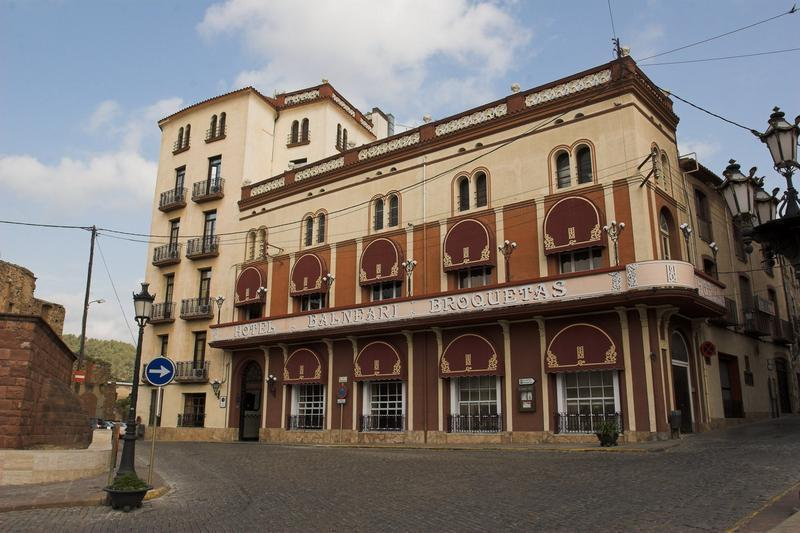
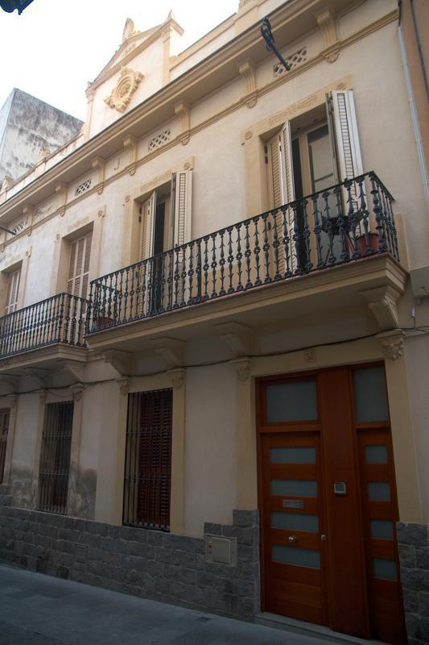
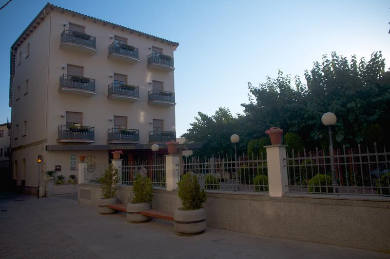
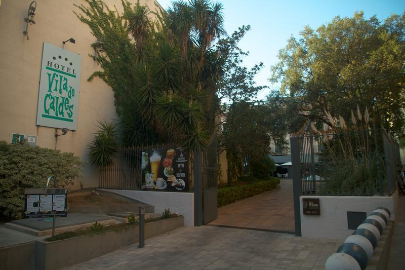

Balnearis
-
 Balneari Broquetas
El Balneari Broquetas és una obra amb elements noucentistes i modernistes protegida com a bé cultural d'interès local.
-
 Balneari Forns
El Balneari Forns és una obra inclosa a l'Inventari del Patrimoni Arquitectònic de Catalunya.
-
 Termes Victòria
L'hotel Balneari Termes Victòria està situat al nucli antic de la vila. L'edifici és una obra protegida com a bé cultural d'interès local.
-
 Hotel Vila de Caldes
L'Hotel Vila de Caldes és un edifici protegit com a bé cultural d'interès local.